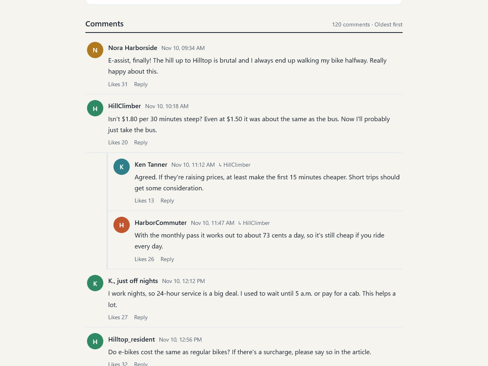
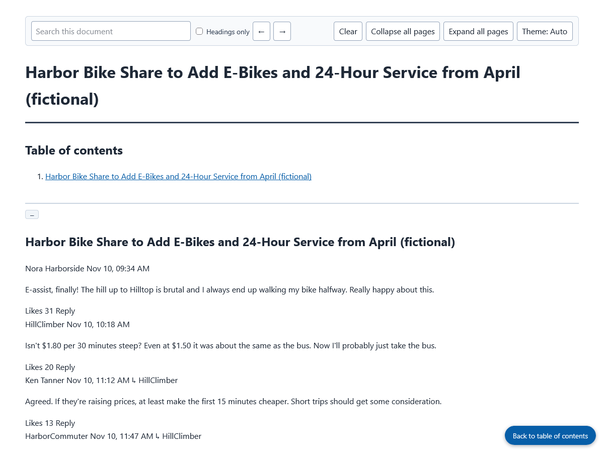

Real output from Grab All Files
A comment section loaded to the end and saved as one HTML file (Free)
A fictional comment section that loads more as you scroll (about 120 comments, with replies) was saved with only the open page selected. The extension scrolled the page to the end by itself and put all 120 comments it loaded into one HTML file. The look was “Easy to read”, so the file keeps the text in one tidy style rather than the site’s design.
Output files
Side by side at the same window width


How it was made
- Source page
- /samples/source/en/comment-thread/
- Extension
- Grab All Files (the version after 5.8.53, to be submitted as 5.8.54)
- Browser
- Firefox 160.0 (Windows 11, headless)
- Plan
- Free
- Made on
- 2026-11-16
- Settings
- Pages: the open page
- Look: Easy to read
- How to save: HTML with contents and search